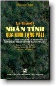

BuddhaSasana
Home Page
This document is written in Vietnamese, with Unicode
Times font
|  |
Lý thuyết Nhân Tính
|
Lời Giới Thiệu"Lý thuyết Nhân tính qua kinh tạng Pàli" là đề tài luận án Tiến sĩ do Thượng tọa Thích Chơn Thiện thực hiện và đệ trình tại Ðại học Delhi. Thượng tọa được cấp phát văn bằng Tiến sĩ Triết học trong lễ Tốt nghiệp lần thứ 73, ngày 13 tháng 4 năm 1996. Ngay sau khi được trình bày tại Hội đồng tiền duyệt, luận án được đánh giá rất cao và được yêu cầu xuất bản ngay. Qua năm phần của luận án, tác giả đã miêu tả, diễn giải và phân tích Giáo lý Duyên khởi của Ðức Phật và trình bày một cách hệ thống khái niệm Nhân tính trong năm bộ kinh Nikàya mà tác giả xem là căn cứ để phát hiện ra rằng vì con người là một vật hữu thể phải chịu chi phối của luật Duyên khởi nên con người chỉ là một tập hợp năm uẩn vốn là Khổ, Vô thường và Vô ngã. Và như thế, cái gọi là Nhân tính không gì khác hơn là một sự vận hành liên tục của năm uẩn và chẳng dính dáng gì đến cái Tôi, cái Của tôi và cái Tự ngã của tôi. Do đó, sự chấp chặt vào một nhân tính bất ổn định và huyễn giả luôn luôn tạo khổ đau và gây lắm phiền hà cho mọi hoạt động của con người. Chính từ quan điểm này, tác giả đề nghị một cái nhìn mới về văn hóa, giáo dục và nêu ra một số giải đáp cho những khủng hoảng hiện nay. Trong những tác phẩm đã xuất bản của Thượng tọa trong vòng ba chục năm qua, nhiều tác phẩm đã được dùng làm sách giáo khoa, giáo tài trong các Trường, Viện và Học viện Phật giáo tại Việt Nam. Trong nỗ lực sưu tập những công trình giá trị để giới thiệu cho giới trí thức Phật giáo chúng tôi thật biết ơn khi được tác giả chấp thuận cho công bố công trình này. Viện Nghiên cứu Phật học Việt
Nam Lời Nói ÐầuVới Phật tử, Phật giáo thường được hiểu là một tôn giáo hay một nếp sống đạo đức. Có ít bài khảo luận xem Phật giáo là con đường giáo dục. Ngay cả những tác phẩm giáo dục rất nổi tiếng, "Các Lý thuyết về Nhân tính" của Calvin S. Hall và Gardner Lindzey xuất bản lần thứ ba, năm 1991, chỉ có một chương trình mới về "Tâm lý học Ðông Phương" bàn về Thắng Pháp (Abhidhamma) qua mười sáu trang giấy, như là lý thuyết Nhân tính của phương Ðông. Trong công trình biên khảo này, nỗ lực của tác giả là trình bày những lời đức Phật dạy qua Kinh Tạng Pàli như là lý thuyết về Nhân tính làm cơ sở xây dựng một hướng văn hóa, giáo dục mới. Tác giả mở đầu tác phẩm đi từ các cuộc khủng hoảng xã hội hiện nay đến lý thuyết Nhân tính của đức Phật để tìm các giải đáp cho các khủng hoảng xã hội ấy. Tác giả biết được các khó khăn phải vượt qua trong công trình biên khảo, nhưng với sự khích lệ của giáo sư cố vấn, Thượng tọa tiến sĩ Satyapàla, đã tin tưởng tiến hành biên khảo, nhất là sau khi đề tài luận án được Hội đồng Khảo cứu của Văn khoa, đại học Delhi chấp thuận ngày 16/02/1994. Tác phẩm chia năm phần:
Tác giả nhìn con người là một hiện hữu do duyên mà sinh, một quá trình trở thành, mà không là một thực thể có bản chất thường hằng. Tác giả hi vọng rằng tác phẩm sẽ đem lại một cái gì hữu ích cho thế giới giáo dục. Hoàn thành được công trình này, tác giả chân thành ghi ân Phân khoa trưởng phân khoa Phật học, Ðại học Delhi, tiến sĩ K. T. S. Sarao; giáo sư cố vấn, tiến sĩ Satyapàla, và quí vị giáo sư, giảng sư của Phân khoa Phật học. Tác giả trân trọng ghi ân cơ quan Văn hóa I.C.C.R. của Chính phủ Ấn Ðộ đã tặng học bổng M.Phil và Ph.D. Trân trọng ghi ân Chính phủ Việt Nam đã cho phép xuất ngoại du học, và trân trọng ghi ân Hòa thượng Thích Minh Châu, Viện trưởng Viện Nghiên cứu Phật học Việt Nam, đã khích lệ tác giả nghĩ về con đường giáo dục Phật giáo. Sau cùng, tác giả trân trọng ghi ân tác giả của những tác phẩm đã cung cấp nhiều tư liệu biên khảo giá trị cho luận án này. Tỷ kheo Thích Chơn Thiện -oOo- |
Chân thành cám ơn anh HDC đã có thiện tâm giúp tổ chức đánh máy vi tính
(Bình Anson, 11-2000)
update: 04-01-2001